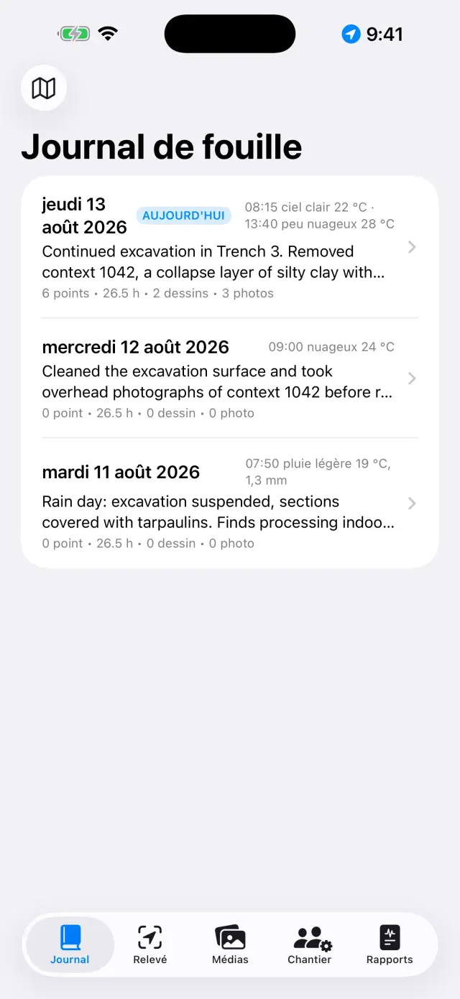
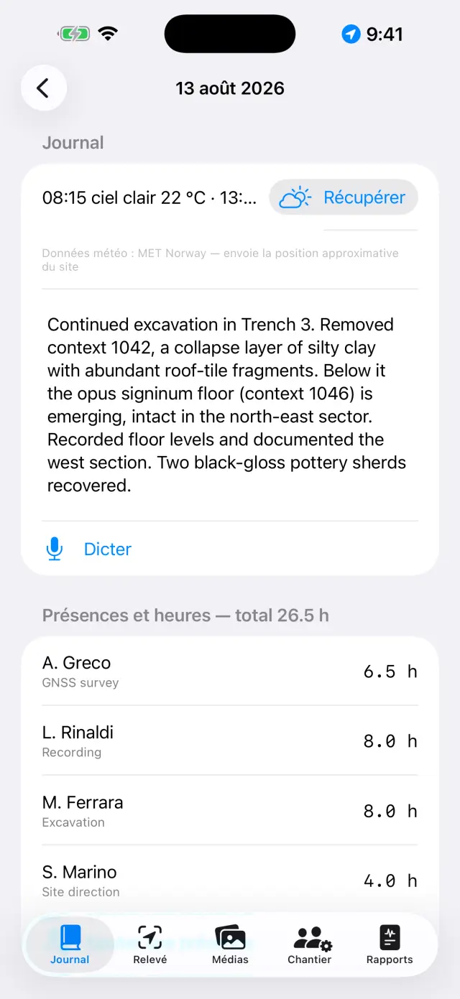
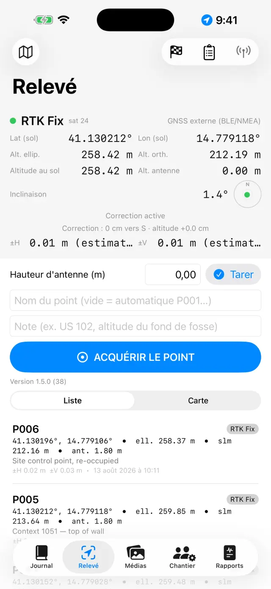
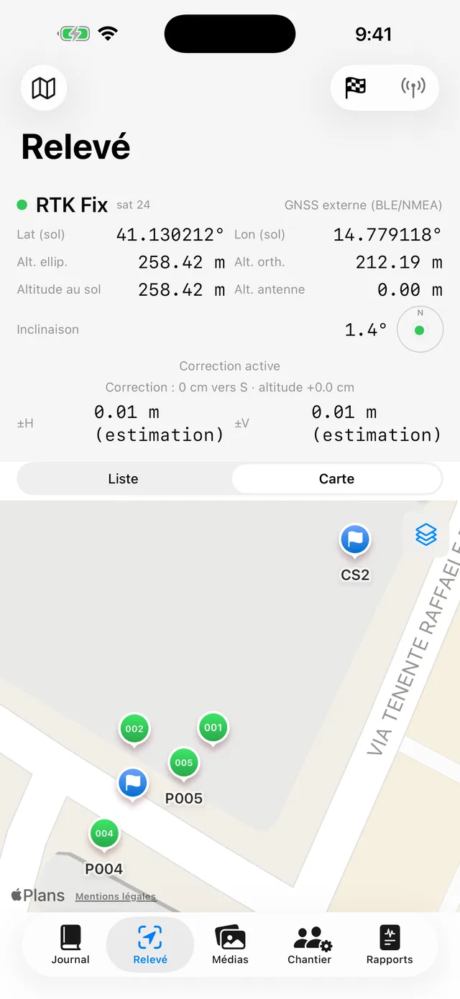
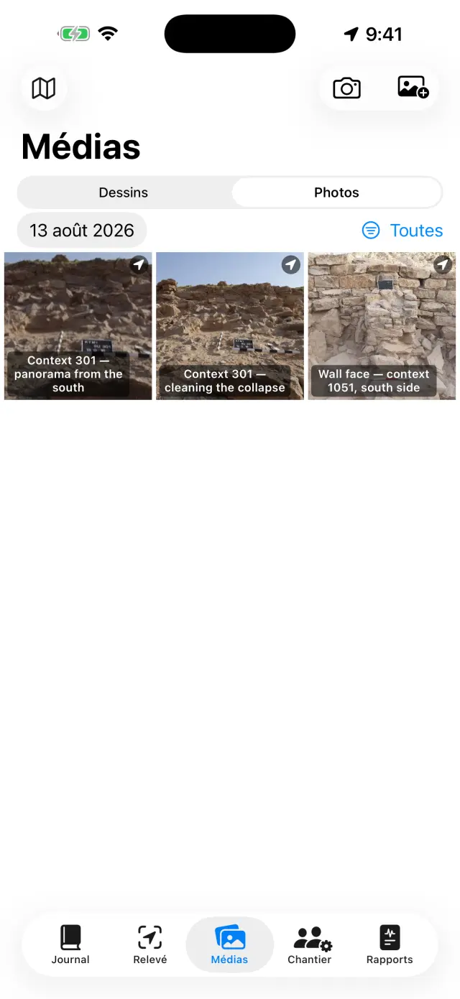
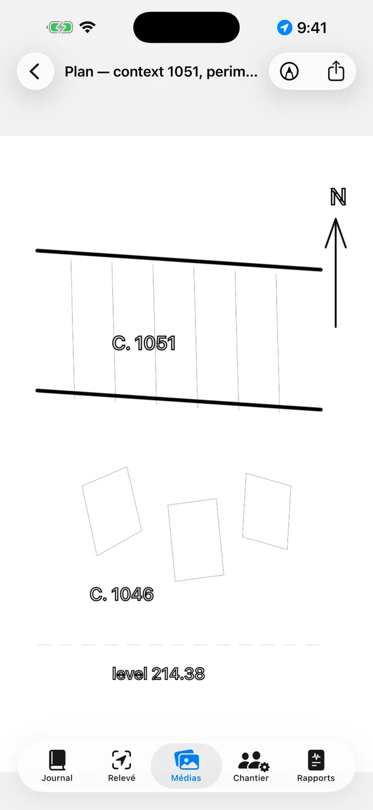
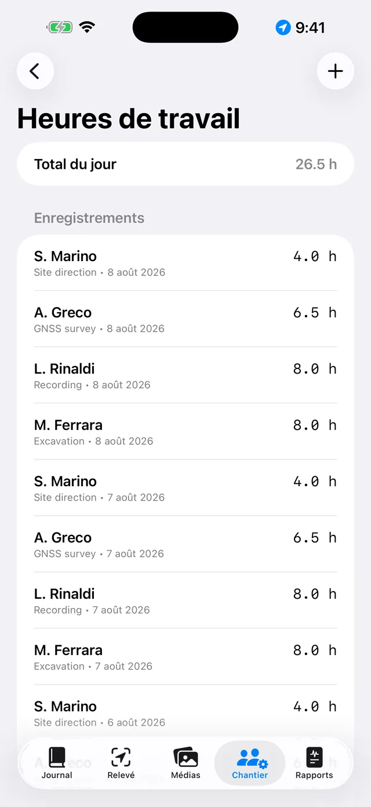
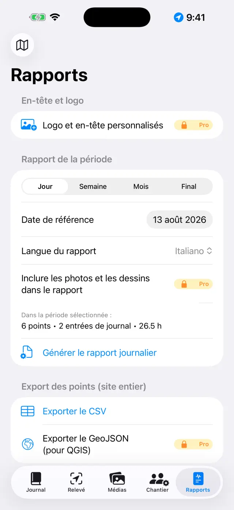

Le journal de fouille numérique pour iPhone et iPad. 100 % hors ligne : vos données restent sur votre appareil.
En deux mots
Une seule idée gouverne tout : chaque journée de fouille est une
page qui se remplit toute seule. Vous enregistrez les choses là où elles se
produisent — un point GNSS dans le Relevé, une photo dans les Médias, les heures
dans le Chantier — et la page du jour dans le Journal les rassemble
toutes automatiquement. En fin de semaine ou en fin de chantier, les rapports se
génèrent tout seuls à partir des pages.
Une journée type
MatinOuvrez la page du jour, notez la météo et le journal (ou dites-le avec Dicter)
ÉquipeDans le Chantier, enregistrez qui est présent et ses heures
RelevéAcquérez les points GNSS ; vérifiez un repère au préalable si vous utilisez le RTK
PhotosPhotographiez depuis les Médias : les coordonnées s'attachent automatiquement
DessinsDécalquez la coupe ou le plan sur une photo (calque numérique)
SoirDepuis l'onglet Rapports, générez le rapport journalier : un PDF prêt à envoyer
Premiers pas
Au premier lancement, vous trouverez déjà un site d'exemple. Pour en créer
un à vous, touchez le nom du site en haut (icône 🗺) →
Nouveau site… et donnez-lui un nom (p. ex. « Colle Sant'Angelo — Sondage 3 »).
Le nom du site actif est toujours visible en haut : tous les onglets
affichent les données de ce site. Pour changer de site, touchez à nouveau le nom.
Accordez les permissions lorsqu'elles sont demandées : position
(pour les points), appareil photo (pour les photos), microphone
(pour la dictée), Bluetooth (seulement si vous utilisez un récepteur externe).
Les cinq onglets
📓 Journal
Touchez une journée pour ouvrir sa page : journal, météo, équipe, points,
photos et dessins du jour y sont déjà.
Écrivez le journal ou touchez Dicter et parlez : la transcription
se fait sur l'appareil et fonctionne même sans réseau.
La météo s'écrit à la main (p. ex. « Ensoleillé, 28 °C, vent léger ») ou se
récupère avec Récupérer, qui demande les conditions du moment au
service météorologique norvégien. Cela nécessite le réseau et ne vaut que pour
la journée d'aujourd'hui : la météo d'hier n'est plus récupérable. Un second
appui dans l'après-midi ajoute une nouvelle mesure. Ce que vous écrivez à la
main l'emporte toujours.
Lors de la récupération, seule la position de la zone arrondie à environ
11 mètres quitte l'appareil, et dans les rapports la ligne apparaît dans la
langue du rapport.

La liste des journées

La page d'une journée
📍 Relevé
Le panneau en haut affiche la position en direct : coordonnées, altitudes,
précision et type de fix (GPS / RTK Float / RTK Fix).
Si vous utilisez une canne, réglez la Hauteur d'antenne (m) :
l'altitude du point est ramenée au sol automatiquement.
Touchez Acquérir le point. Le nom est progressif (P001, P002…),
mais vous pouvez en saisir un à vous (p. ex. « US 102 — fond de fosse ») et
ajouter une note.
Passez de Liste à Carte pour voir les points sur
place ; depuis la carte, vous pouvez activer le cadastre ou un autre service WMS.
Les repères (🏁) vivent dans leur propre section : importez-les depuis un
CSV ou créez-les, puis utilisez la vérification pour surveiller les écarts
ΔN/ΔE/ΔZ en temps réel avant de lever.

Le panneau GNSS du Relevé

Points et repères sur la carte
Chaque point enregistre les deux altitudes :
ellipsoïdale et orthométrique (alt. orth.). Avec le GPS interne du téléphone,
l'altitude orthométrique peut ne pas être disponible : il faut alors un
récepteur externe (voir plus bas).
📷 Médias
Photographiez avec le bouton appareil photo ou importez depuis la pellicule.
Les photos prennent un nom progressif (F001, F002…) et sont géoréférencées
avec la dernière position GNSS disponible.
Touchez une photo pour son titre et ses notes (p. ex. « US 102 depuis le nord »).

La galerie photo
✏️ Dessins (dans les Médias)
Créez une nouvelle planche et choisissez une photo du site comme fond :
c'est votre calque numérique.
Décalquez les couches, les coupes et les pierres du doigt ou avec l'Apple
Pencil ; réglez l'opacité de la photo pour mieux voir le tracé.
Ajoutez des zones de texte pour les étiquettes (p. ex. « US 1002 ») et la
flèche du nord.
Une fois terminé, masquez la photo : le dessin propre reste, prêt pour le rapport.

Le calque numérique
👷 Chantier
Enregistrez les présences du jour : nom, fonction et heures de chacun.
Tenez l'inventaire des équipements et à qui ils sont attribués.

Présences et heures
📄 Rapports
Choisissez le type : journalier (gratuit, avec filigrane),
hebdomadaire, mensuel ou final
avec annexes complètes PRO.
Choisissez la langue du rapport parmi quatorze,
indépendante de la langue de l'application : le rapport peut sortir en
italien même si vous utilisez l'application en français.
Générez le PDF, ou exportez en DOCX avec logo et photos
PRO, CSV des points, GeoJSON pour QGIS
PRO.

Génération des rapports
Récepteur GNSS externe et NTRIP
Avec un récepteur externe (antenne centimétrique), l'application atteint la
précision RTK. Le GPS interne reste toujours disponible en solution de repli.
Allumez le récepteur et activez le Bluetooth du téléphone.
Dans le Relevé, choisissez la source de position : GNSS
externe (BLE/NMEA)PRO et sélectionnez votre
récepteur dans la liste. Les récepteurs MFi (gratuits) et ceux qui diffusent le
NMEA sur le réseau sont aussi pris en charge.
Pour les corrections RTK, configurez le NTRIP : adresse du
caster, port, mountpoint, utilisateur et mot de passe (conservés dans le
trousseau de l'appareil). L'application envoie votre position au caster et
reçoit les corrections.
Attendez le passage en RTK Fix : précision centimétrique.
Vérifiez sur un repère avant de commencer.
Sauvegarde et échange
Depuis le menu du site, touchez Exporter le site (.zip) : tout
s'y trouve — journal, points, photos, dessins, heures, repères.
Conservez le ZIP où vous voulez (Fichiers, Drive, e-mail…). C'est votre
sauvegarde : l'application n'a pas de cloud, par choix.
Importer le site (.zip)… recrée le site sur un autre appareil,
même entre iPhone et Android.
⚠️ Supprimer le site… efface le site avec tout son
contenu et c'est irréversible : exportez d'abord un ZIP en cas de doute.
Gratuit et Pro
Gratuit
Pro
Sites
1
Illimités
GNSS
GPS interne, récepteurs MFi
+ BLE/NMEA, NTRIP
Rapports
Journalier avec filigrane
Tous, sans filigrane
Export
PDF, CSV
+ DOCX avec logo et photos, GeoJSON
Dictée vocale
✓
✓
Langues des rapports
14
14
Pro est un abonnement mensuel ou annuel à renouvellement automatique, ou un
achat unique à vie. Il se gère et se résilie depuis les réglages de votre
identifiant Apple.
Résolution des problèmes
Le récepteur Bluetooth n'apparaît pas ou ne se connecte pas
Vérifiez, dans l'ordre :
le récepteur est allumé et n'est pas déjà connecté à une autre application ou à un autre téléphone ;
le Bluetooth du système est activé et l'application a la permission
Bluetooth (Réglages → Giornale di Scavo) ;
la source choisie dans le Relevé est GNSS externe (BLE/NMEA) ;
éteignez et rallumez le récepteur, puis relancez la recherche.
Je n'arrive jamais au RTK Fix
Une connexion NTRIP active est nécessaire : vérifiez le caster, le mountpoint et les identifiants.
Vérifiez la couverture data du téléphone : les corrections voyagent par internet.
Le ciel dégagé compte : les arbres denses et les murs proches dégradent le
signal. Avec une couverture faible, vous pouvez rester en RTK Float (décimétrique).
Choisissez un mountpoint proche (< 30–40 km) ou un réseau VRS.
Le NTRIP ne se connecte pas
Vérifiez l'adresse et le port (souvent 2101) et que le mountpoint existe :
de nombreux casters publient la liste (sourcetable).
Un utilisateur ou un mot de passe erroné donne une erreur 401/403 :
revérifiez les identifiants.
Certains réseaux exigent l'envoi de la position (GGA) : l'application le
fait seule, mais le récepteur doit déjà avoir un fix.
L'altitude orthométrique est vide ou nulle
Le GPS interne des téléphones ne fournit que l'altitude ellipsoïdale.
L'altitude orthométrique (alt. orth.) provient de la trame GGA d'un récepteur
externe. Sans récepteur, les points enregistrent tout de même l'ellipsoïdale.
La dictée ne fonctionne pas
Vérifiez la permission microphone et la reconnaissance vocale dans les Réglages.
La transcription se fait sur l'appareil : la première fois, le système peut
devoir télécharger le modèle de la langue (réseau nécessaire une seule fois,
puis cela fonctionne hors ligne).
Parlez par phrases courtes ; le texte s'insère à la fin du journal.
La carte cadastrale (WMS) ne s'affiche pas
L'application est hors ligne, mais les couches WMS sont des services web :
elles nécessitent une connexion et un service actif. Le cadastre italien est
préconfiguré ; pour d'autres pays, saisissez le point de terminaison WMS du
service national (il doit prendre en charge l'EPSG:3857). Hors couverture
data, la carte de base et les points restent visibles.
Les photos n'ont pas de coordonnées
La photo prend la position du dernier fix GNSS : ouvrez d'abord le Relevé
et attendez que la position soit acquise, puis photographiez. Si la permission
de position est refusée, les photos s'enregistrent sans coordonnées.
Il manque des photos ou le logo dans le rapport
Les photos dans les rapports, le logo et l'en-tête personnalisé font partie
de Pro et s'appliquent au DOCX et au PDF. Le rapport journalier gratuit porte
un filigrane et les photos n'y sont pas incluses.
J'ai supprimé un site par erreur
La suppression est définitive : les données ne sont pas récupérables (il
n'y a pas de cloud). Si vous avez exporté un ZIP auparavant, importez-le pour
restaurer le site à cette date. Conseil : exportez un ZIP en fin de journée.
J'ai acheté Pro mais c'est encore verrouillé
Touchez Restaurer les achats sur l'écran Pro, avec le même
identifiant Apple que celui de l'achat. Si vous avez changé d'appareil, la
restauration récupère l'abonnement ou la licence à vie.
« Récupérer » est grisé, ou indique « Météo non disponible »
si le bouton est grisé, vous êtes sur la page d'un jour passé : la météo
se récupère uniquement pour la journée d'aujourd'hui ;
si « Météo non disponible » s'affiche, le réseau manque, ou le site n'a
pas encore de point GNSS pour en tirer la position — relevez un point et réessayez.